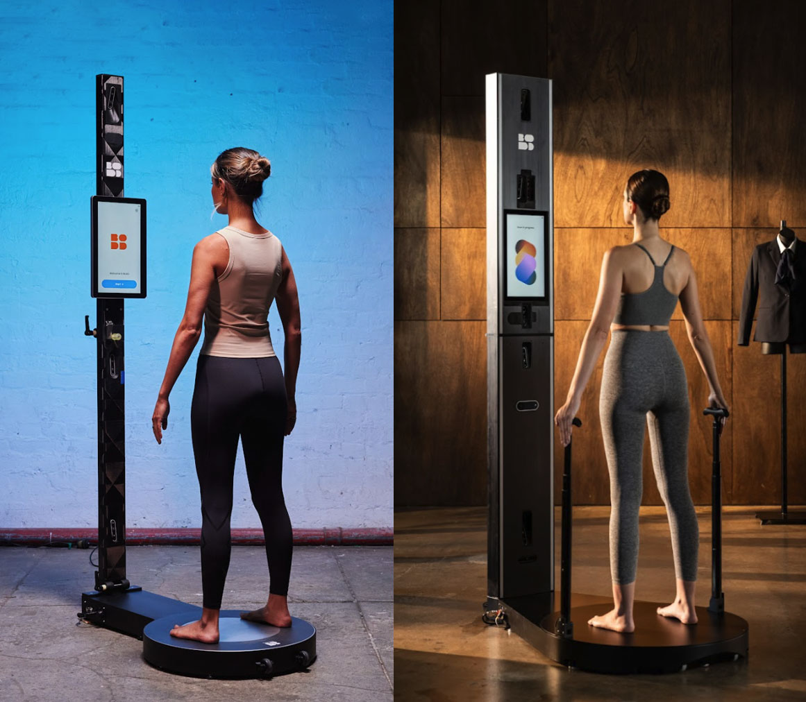
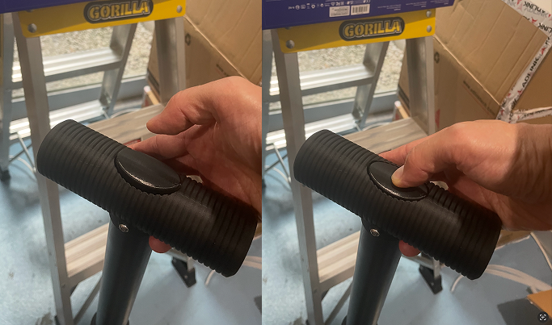
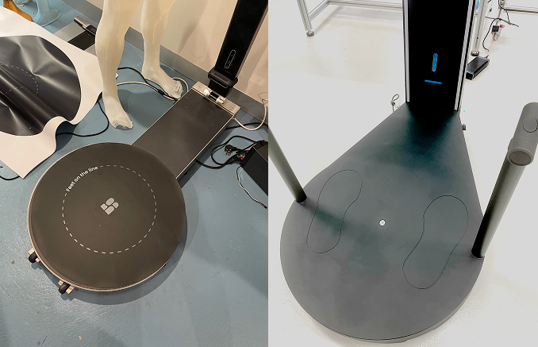
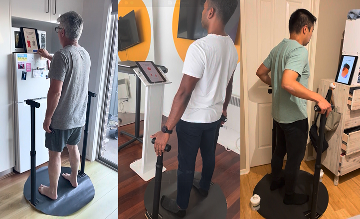

Context
Bodd’s 3D scanners measure body shape and wellness indicators to help organisations fit uniforms accurately and promote staff wellbeing. Already deployed across United Airlines, New Zealand Defence Force, Fire Rescue Victoria, and South Australia Police, it was now evolving toward a wellness-enhanced model. To encourage consistent scanning posture, this new model introduced stability handles, as well as foot imprints, which raised new UX challenges.

Old model (left), new model with handles (right)
Challenge
The new handle designs included a button to allow users to adjust the height of the grip. The base of the scanner also now had foot imprints to prompt the user to stand correctly in place.

Height adjustment mechanism, how easy was this to understand?
We needed to confirm that:
- Users intuitively knew how to adjust the height.
- Users understood where to stand and how to position themselves.
- Instructions on the display were clear and timely.
- We could estimate the average time spent on the scanner with this new hardware addition.

Old model base- no foot imprints (left), new model base with foot imprints (right)
Approach
As the production hardware was yet to be fully confirmed and mass produced, I had to simulate the experience realistically enough to observe authentic behaviour with the proposed handle design.
I sourced readily available materials for a makeshift prototype of the scanner setup and proposed interface:
- An iPad on an elevated stand to represent the scanner’s touch display, running a clickable Figma prototype with new handle and foot imprint instructions.
- Printed base templates indicating stance and orientation.
- A makeshift wooden mount for the base which the hardware team had prepared.
- The latest version of the proposed handles to slot into the base.

Prototype set ups, testing at home and office.
Each session involved:
- Getting the user to click through the instructional flow that precedes the scan.
- Observing how they prepare themselves for the scan based on the instructions administered
- Post-session interviews on clarity of instructions
UI Prototype
Click above to watch full prototype demo (sound on)
Key Insights
- On the first iteration, some users were unsure when the instruction started and ended — they didn't always know when it was their "turn" to act.
- Some instructions were too text-heavy and intimidating, which led some users to skip them out of impatience.
- It took an average of 47 seconds to go through the instructional process.
- Most users intuitively pressed the button on the handle to adjust the height.
- Users intuitively stood on the foot imprints.
Impact
My prototype and user-testing sessions helped the team:
- Validate how intuitive the button mechanism of the handles were.
- Validate the effectiveness of the foot imprints on the base before full-scale manufacturing.
- Refine the on-screen copy into short, command-style steps that balanced clarity with brevity.
- Clarity was critical for high-quality scans, but speed was equally important — military clients needed to process large volumes of recruits quickly, so every second mattered. Testing helped us gauge where we sat on that spectrum and what trade-offs were worth making.
- Estimate the new average scan-session duration, enabling sales and operations teams to plan and market high-volume scanning sessions.
- Inform the software roadmap by giving developers clear evidence of which features and interactions mattered most to users.
×